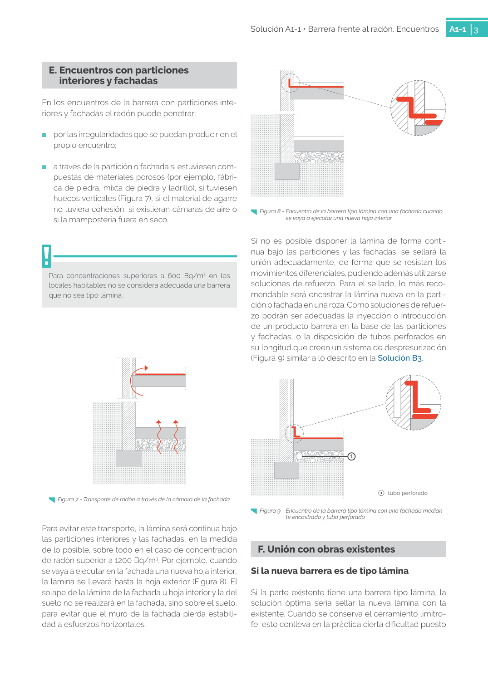

<!doctype html>
<html lang="es"><head><meta charset="utf-8">
<meta name="viewport" content="width=device-width, initial-scale=1">
<title>GUIA · Página física 33</title><link rel="stylesheet" href="../estilo.css">
</head><body>
<nav><a href="../index.html">Índice</a> › <a href="../doc/guia-pdf-f3314b0414fe-sin-fecha-e58e54b822cf.html">GUIA</a></nav>

<h1>GUIA · Página física 33</h1>
<header class="meta"><p><strong>Guia de rehabilitacion frente al radon Fichas</strong> · edición sin-fecha · capa guia</p>
<p>Documento <code>GUIA-PDF-f3314b0414fe</code> · SHA-256 del PDF <code>e58e54b822cf4ab00e258f0eb50c0f06a8c04e3730a7f530d224485e2a5bb02e</code></p>
<p>Página física 33 de 82.</p>
<p><a href="../../contenido/docs/GUIA-PDF-f3314b0414fe/sin-fecha__e58e54b822cf/fuente.pdf#page=33">Copia fiel del PDF fuente</a> · <a href="https://www.codigotecnico.org/pdf/GuiasyOtros/GuiaRadon/Guia_de_rehabilitacion_frente_al_radon+Fichas.pdf">Fuente oficial</a></p>
<p><a href="https://www.codigotecnico.org/Guias/GuiaRadon.html">Ficha de la disposición en la fuente oficial</a></p>
<div class="cita"><p><a href="../../contenido/docs/GUIA-PDF-f3314b0414fe/sin-fecha__e58e54b822cf/fuente.pdf#page=2">Créditos y autoría en el PDF fuente</a>. Reproducción con cita de fuente y autores.</p>
<p>Permiso literal: Se permite la reproducción total o parcial del contenido de este nible en el momento de su publicación. No se aceptará por las institu­ documento siempre y cuando se cite la fuente original</p>
<details><summary>Leer los créditos completos y la autoría</summary><pre class="literal">Este documento ha sido elaborado por el Instituto de ciencias
de la construcción Eduardo Torroja (IETcc) bajo la supervisión
de la Dirección General de Agenda Urbana y Arquitectura del
Ministerio de Transportes, Movilidad y Agenda Urbana (MITMA).

El IETcc, perteneciente al Consejo Superior de Investigaciones
Científicas (CSIC), es el centro de investigación en edificación
de referencia en España. La Unidad de Calidad en la Construc­
ción del IETcc asesora al MITMA en la elaboración del Código
Técnico de la Edificación que, desde el año 2019, cuenta con la
sección HS6 Protección frente a la exposición al radón.

Dirección y Coordinación:
Ministerio de Transportes, Movilidad y Agenda Urbana
 Isabel Marcos Anasagasti
 Raquel Lara Campos
 Eduardo González de Prado
Instituto de ciencias de la construcción Eduardo Torroja CSIC
 Pilar Linares Alemparte

Autoras:
 Pilar Linares Alemparte
 Sonia García Ortega

Colaboradoras:
 Virginia Sánchez Ramos
 Karina Angélica García Pardo

Edita:
 Centro de Publicaciones Secretaría General Técnica
 Ministerio de Transportes, Movilidad y Agenda Urbana©

Entidad colaboradora:
 Consejo Superior de Investigaciones Científicas · CSIC
 Ministerio de Ciencia e Innovación

    Catálogo de publicaciones de la Administración General
    del Estado: publicacionesoficiales.boe.es

    Centro virtual de publicaciones del Ministerio de Transpor­
     tes, Movilidad y Agenda Urbana: www.mitma.gob.es

    Página web del Código Técnico de la Edificación:

                                                                                                                                                                              SECRETARÍA                                                                                                                                                                     GENERAL                                                                                                                                                                         DE    www.codigotecnico.org                                                                                                                                              AGENDA URBANA                                                                                                                                                                           Y VIVIENDA                                                                                                                                                 MINISTERIO                                                                                                           GOBIERNO                                                                                                                           DE                                                                                                                                           TRANSPORTES,                                                                                                                                                 MOVILIDAD                                                                                                             DE ESPAÑA                                                                                                                               Y AGENDA                                                                                                                           URBANA                                                                                                                                                               DIRECCIÓN                                                                                                                                                                     GENERAL                                                                                                                                                                         DE
Maquetación y diseño gráfico:                                                                                                     AGENDA URBANAY ARQUITECTURA
 Lapizmente. Estrategia • Diseño Gráfico


                                                                                                                                             CIENCIAFotografía portada:                                                                                GOBIERNODE ESPAÑA      MINISTERIODEE INNOVACIÓN
 Sonia García Ortega

Los contenidos o ideas recogidas en este documento pertenecen a
sus autores. Este documento está basado en el conocimiento dispo­     Se permite la reproducción total o parcial del contenido de este
nible en el momento de su publicación. No se aceptará por las institu­     documento siempre y cuando se cite la fuente original y a sus
ciones ni los autores implicados responsabilidad de ningún tipo por el                                                                    autores.
uso de estas recomendaciones. Las figuras tienen carácter ilustrativo
y no deben interpretarse como detalles constructivos.</pre></details></div>
<div class="aviso"><strong>Alcance y límites</strong><ul><li>Extracción automática sin revisión técnica humana completa. Contraste tablas, fórmulas, notas y excepciones con el PDF. La edición disponible no determina la vigencia ni la aplicabilidad a un proyecto.</li><li>Guia o documento divulgativo; no es texto normativo.</li><li>Extracción automática; el cotejo humano está pendiente.</li><li>Semántica y tablas no equivalen a validación exhaustiva.</li></ul></div></header>
<nav><a href="guia-pdf-f3314b0414fe-sin-fecha-e58e54b822cf__p0032.html">← Página 32</a> · <a href="guia-pdf-f3314b0414fe-sin-fecha-e58e54b822cf__p0034.html">Página 34 →</a></nav>
<p>Formato: <a href="../../contenido/docs/GUIA-PDF-f3314b0414fe/sin-fecha__e58e54b822cf/pagina/p0033.md">Texto de la página (Markdown)</a></p>
<p><a href="../../contenido/docs/GUIA-PDF-f3314b0414fe/sin-fecha__e58e54b822cf/bloque/p0033.json">JSON de bloques</a></p>
<pre class="literal">Solución A1-1 • Barrera frente al radón. Encuentros 
A1-1
3
E. Encuentros con particiones 
interiores y fachadas
En los encuentros de la barrera con particiones inte­
riores y fachadas el radón puede penetrar:
	
■
por las irregularidades que se puedan producir en el 
propio encuentro;
	
■
a través de la partición o fachada si estuviesen com­
puestas de materiales porosos (por ejemplo, fábri­
ca de piedra, mixta de piedra y ladrillo), si tuviesen 
huecos verticales (Figura 7), si el material de agarre 
no tuviera cohesión, si existieran cámaras de aire o 
si la mampostería fuera en seco.
Para concentraciones superiores a 600 Bq/m3 en los 
locales habitables no se considera adecuada una barrera 
que no sea tipo lámina.
Para evitar este transporte, la lámina será continua bajo 
las particiones interiores y las fachadas, en la medida 
de lo posible, sobre todo en el caso de concentración 
de radón superior a 1200 Bq/m3. Por ejemplo, cuando 
se vaya a ejecutar en la fachada una nueva hoja interior, 
la lámina se llevará hasta la hoja exterior (Figura 8). El 
solape de la lámina de la fachada u hoja interior y la del 
suelo no se realizará en la fachada, sino sobre el suelo, 
para evitar que el muro de la fachada pierda estabili­
dad a esfuerzos horizontales.
Si no es posible disponer la lámina de forma conti­
nua bajo las particiones y las fachadas, se sellará la 
unión adecuadamente, de forma que se resistan los
movimientos diferenciales, pudiendo además utilizarse
soluciones de refuerzo. Para el sellado, lo más reco­
mendable será encastrar la lámina nueva en la parti­
ción o fachada en una roza. Como soluciones de refuer­
zo podrán ser adecuadas la inyección o introducción 
de un producto barrera en la base de las particiones 
y fachadas, o la disposición de tubos perforados en 
su longitud que creen un sistema de despresurización 
(Figura 9) similar a lo descrito en la Solución B3.
 
1
1   tubo perforado
F. Unión con obras existentes
Si la nueva barrera es de tipo lámina
Si la parte existente tiene una barrera tipo lámina, la 
solución óptima sería sellar la nueva lámina con la 
existente. Cuando se conserva el cerramiento limítro­
fe, esto conlleva en la práctica cierta dificultad puesto 
  Figura 7 - Transporte de radón a través de la cámara de la fachada
  Figura 8 - Encuentro de la barrera tipo lámina con una fachada cuando 
se vaya a ejecutar una nueva hoja interior
  Figura 9 - Encuentro de la barrera tipo lámina con una fachada median­
te encastrado y tubo perforado
</pre>
<figure><a href="../../contenido/docs/GUIA-PDF-f3314b0414fe/sin-fecha__e58e54b822cf/figura/p0033.png"></a><figcaption>Página visual 33, para contrastar fórmulas, tablas y figuras.</figcaption></figure><h2>Tablas extraídas</h2><p>Datos candidatos: compruebe celdas y notas en el PDF.</p><ul><li><a href="../../contenido/docs/GUIA-PDF-f3314b0414fe/sin-fecha__e58e54b822cf/tabla/p0033_t01.json">p0033_t01.json</a></li></ul>
<h2>Segmentos que incluyen esta página</h2><ul>
<li><a href="../apartado/guia-pdf-f3314b0414fe-sin-fecha-e58e54b822cf__a0094.html">a0094 · 1   pieza de refuerzo prefabricado 2  sellante / D. Encuentros con pilares</a></li>
<li><a href="../apartado/guia-pdf-f3314b0414fe-sin-fecha-e58e54b822cf__a0095.html">a0095 · 1   pieza de refuerzo prefabricado 2  sellante / E. Encuentros con particiones interiores y fachadas</a></li>
<li><a href="../apartado/guia-pdf-f3314b0414fe-sin-fecha-e58e54b822cf__a0096.html">a0096 · 1   tubo perforado F. Unión con obras existentes</a></li>
<li><a href="../apartado/guia-pdf-f3314b0414fe-sin-fecha-e58e54b822cf__a0097.html">a0097 · 1   tubo perforado F. Unión con obras existentes / Si la nueva barrera es de tipo lámina</a></li>
</ul>
<footer>Generado estáticamente desde el corpus normalizado; sin JavaScript ni servicios externos. El HTML es una vista reproducible; conserve la fuente y la edición al citar.</footer>
</body></html>
